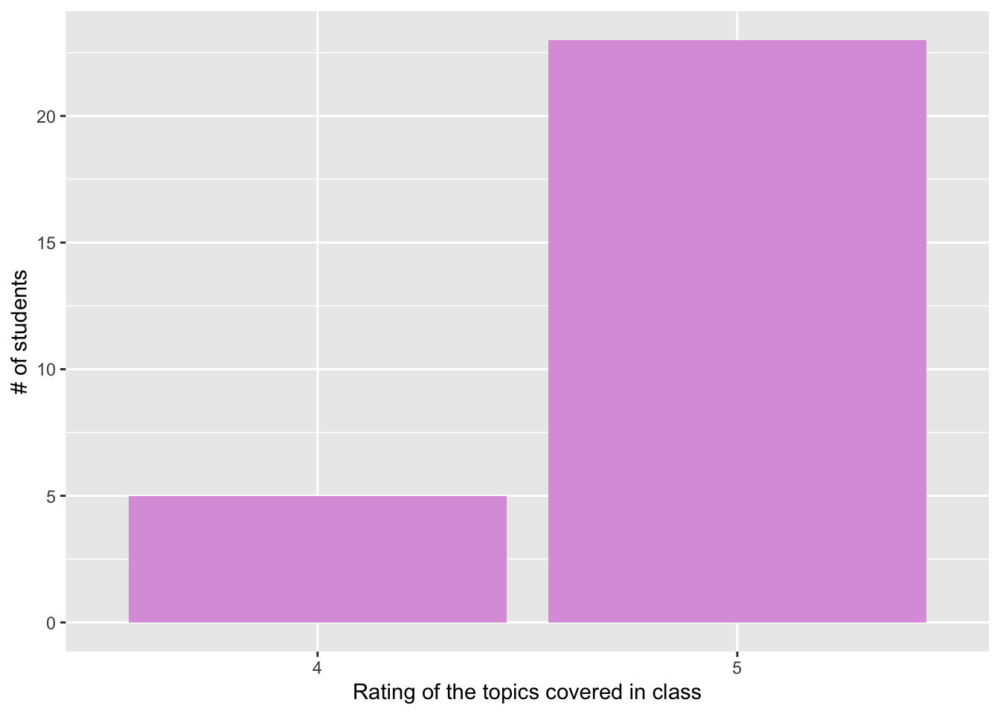
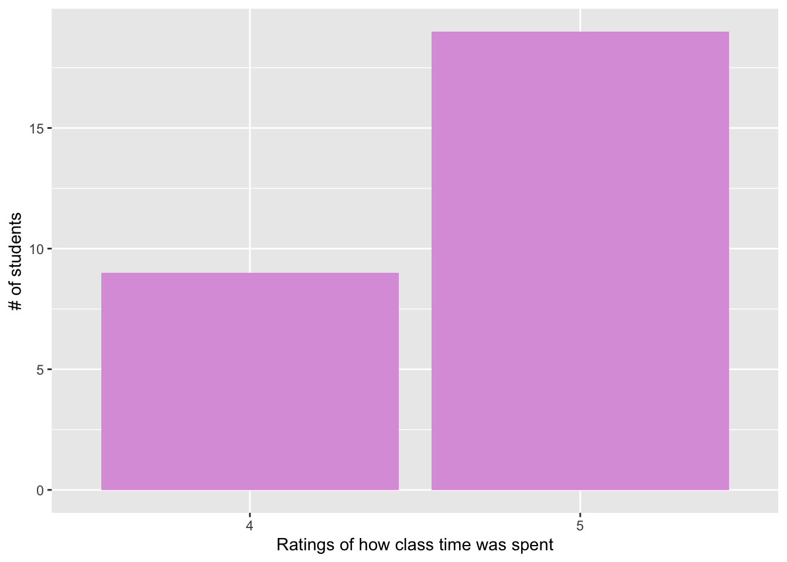
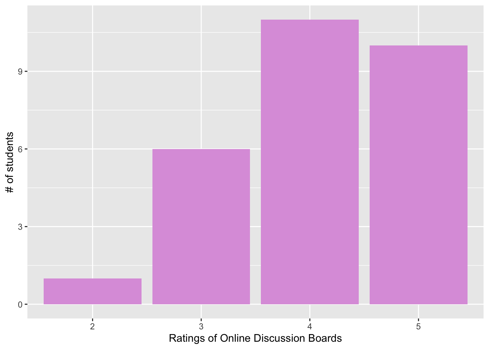
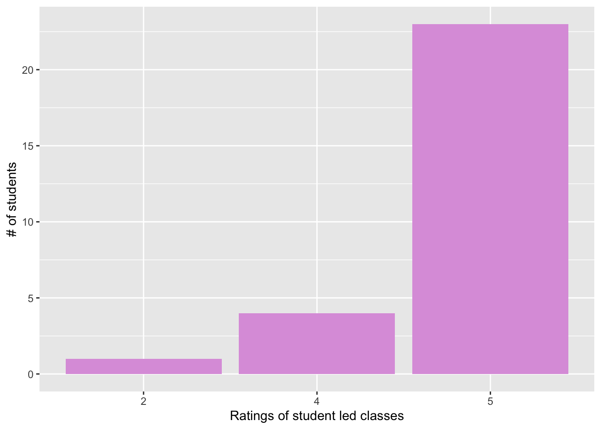
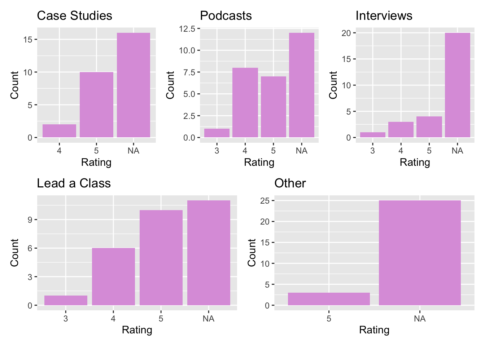
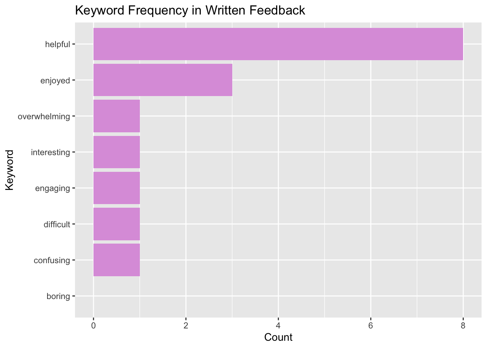
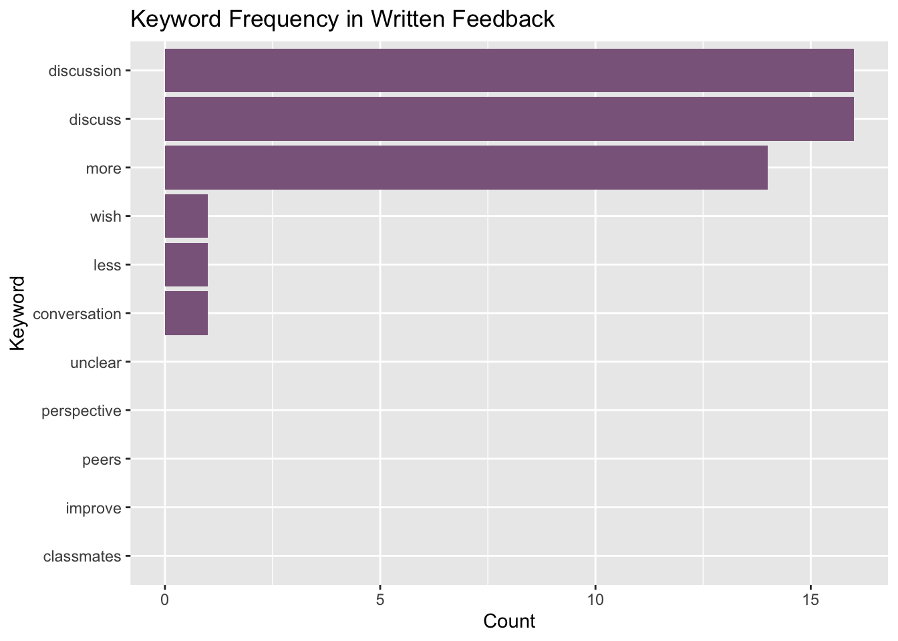
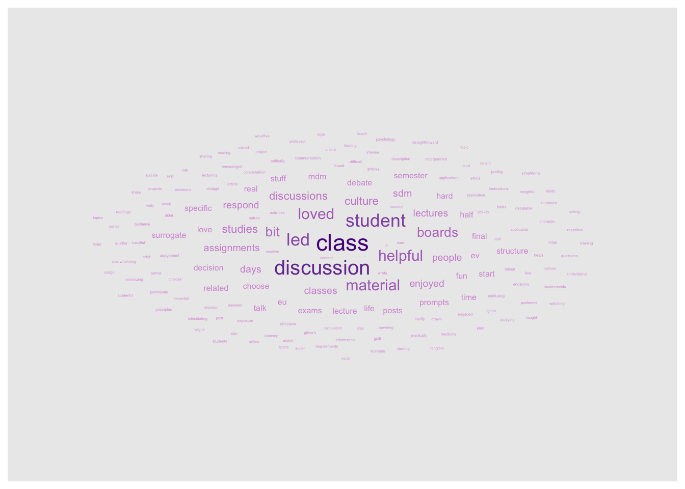

In this portfolio piece, I’ll be using R to help me with reviewing some extra course evaluations students filled out for a course I helped teach. These are NOT official course evaluations that are mandated by the university. We ask students to fill these out to help us improve the class for the following years. The first step was to enter all of their ratings and comments, which brought me back to my data entry days as a Freshman undergraduate student. Just as these students learned from us this semester, I’m hoping their data can help me learn a thing or two about how they felt about this course. Although I have already read through their comments (I would have loved to do more text analysis, but for such a small “sample size”, manually reading them over makes more sense), sometimes visualizing data can reveal things we otherwise wouldn’t have noticed. Let’s get started!
## ── Attaching core tidyverse packages ──────────────────────── tidyverse 2.0.0 ──
## ✔ dplyr 1.2.0 ✔ readr 2.1.6
## ✔ forcats 1.0.1 ✔ stringr 1.6.0
## ✔ ggplot2 4.0.2 ✔ tibble 3.3.1
## ✔ lubridate 1.9.5 ✔ tidyr 1.3.2
## ✔ purrr 1.2.1
## ── Conflicts ────────────────────────────────────────── tidyverse_conflicts() ──
## ✖ dplyr::filter() masks stats::filter()
## ✖ dplyr::lag() masks stats::lag()
## ℹ Use the conflicted package (<http://conflicted.r-lib.org/>) to force all conflicts to become errors
##
## Attaching package: 'psych'
##
##
## The following objects are masked from 'package:ggplot2':
##
## %+%, alpha
##
##
##
## Attaching package: 'plotly'
##
##
## The following object is masked from 'package:ggplot2':
##
## last_plot
##
##
## The following object is masked from 'package:stats':
##
## filter
##
##
## The following object is masked from 'package:graphics':
##
## layout## ID Topic_Choice Class_Time Discussion_Boards Student_Led_Class Case_Studies
## 1 1 5 4 5 5 NA
## 2 2 4 5 5 4 5
## 3 3 5 5 4 5 NA
## 4 4 5 4 5 5 NA
## 5 5 5 5 5 5 4
## 6 6 5 5 4 5 NA
## Podcasts Interviews Class_Lead Miscellaneous
## 1 NA 3 5 NA
## 2 NA NA NA 5
## 3 4 NA 4 NA
## 4 NA 4 5 NA
## 5 5 NA NA NA
## 6 NA NA 5 5
## Comments
## 1 Starting with EU/EV stuff was helpful, maybe more small group discussion (large is a bit intimidating.
## 2 Too much time on Garcia-Retarnaro article, SDM very useful. like discussion based nature of course, clarify which part of student led class important for final. Like how case study tailer to specific interests.
## 3 Liked Gillon's 4 principles. Enjoyed discussion time and student led clas days. Recommends minimizing chatgpt usage since group members for leading a class were a bit too over-reliant. More initial direction with assignments would be helpful.
## 4 Enjoyed surrogate decision making topic. Could space out projects more (first half lighter load, intense at end).
## 5 hard to participate in class because some people were more vocal or quicker on their feet to respond.
## 6 calculation stuff at start of course didnt really match rest of the course style. Sometimes discussion board felt a bit repetitive after also talking in class(like activity discussions like debate/role play) Loved student classes and getting to be creative with their own projectLet’s get some descriptives:
## Min. 1st Qu. Median Mean 3rd Qu. Max.
## 4.000 5.000 5.000 4.821 5.000 5.000ggplot(courseDF, aes(x = factor(Topic_Choice))) +
geom_bar(fill = "plum") +
labs(x = "Rating of the topics covered in class", y = "# of students")
## Min. 1st Qu. Median Mean 3rd Qu. Max.
## 4.000 4.000 5.000 4.679 5.000 5.000ggplot(courseDF, aes(x = factor(Class_Time))) +
geom_bar(fill = "plum") +
labs(x = "Ratings of how class time was spent", y = "# of students")
## Min. 1st Qu. Median Mean 3rd Qu. Max.
## 2.000 3.750 4.000 4.071 5.000 5.000ggplot(courseDF, aes(x = factor(Discussion_Boards))) +
geom_bar(fill = "plum") +
labs(x = "Ratings of Online Discussion Boards", y = "# of students")
## Min. 1st Qu. Median Mean 3rd Qu. Max.
## 2.00 5.00 5.00 4.75 5.00 5.00ggplot(courseDF, aes(x = factor(Student_Led_Class))) +
geom_bar(fill = "plum") +
labs(x = "Ratings of student led classes", y = "# of students")
library(knitr) # that way it looks nice!
summary_table <- data.frame(
Variable = c("Topic Choice", "Class Time", "Discussion Boards", "Student Led Class"),
Median = c(median(courseDF$Topic_Choice, na.rm = TRUE),
median(courseDF$Class_Time, na.rm = TRUE),
median(courseDF$Discussion_Boards, na.rm = TRUE),
median(courseDF$Student_Led_Class, na.rm = TRUE)),
Mode = c(which.max(tabulate(courseDF$Topic_Choice)),
which.max(tabulate(courseDF$Class_Time)),
which.max(tabulate(courseDF$Discussion_Boards)),
which.max(tabulate(courseDF$Student_Led_Class)))
)
kable(summary_table, caption = "Summary of Course Aspects Ratings")| Variable | Median | Mode |
|---|---|---|
| Topic Choice | 5 | 5 |
| Class Time | 5 | 5 |
| Discussion Boards | 4 | 4 |
| Student Led Class | 5 | 5 |
Students had to complete 2 assignments, which they could choose from a list. Let’s see what they thought of them:
## Min. 1st Qu. Median Mean 3rd Qu. Max. NA's
## 4.000 5.000 5.000 4.833 5.000 5.000 16## Min. 1st Qu. Median Mean 3rd Qu. Max. NA's
## 3.000 4.000 4.000 4.375 5.000 5.000 12## Min. 1st Qu. Median Mean 3rd Qu. Max. NA's
## 3.000 4.000 4.500 4.375 5.000 5.000 20## Min. 1st Qu. Median Mean 3rd Qu. Max. NA's
## 3.000 4.000 5.000 4.529 5.000 5.000 11## Min. 1st Qu. Median Mean 3rd Qu. Max. NA's
## 5 5 5 5 5 5 25library(ggplot2)
library(patchwork)
p1 <- ggplot(courseDF, aes(x = factor(Case_Studies))) +
geom_bar(fill = "plum") +
labs(title = "Case Studies", x = "Rating", y = "Count")
p2 <- ggplot(courseDF, aes(x = factor(Podcasts))) +
geom_bar(fill = "plum") +
labs(title = "Podcasts", x = "Rating", y = "Count")
p3 <- ggplot(courseDF, aes(x = factor(Interviews))) +
geom_bar(fill = "plum") +
labs(title = "Interviews", x = "Rating", y = "Count")
p4 <- ggplot(courseDF, aes(x = factor(Class_Lead))) +
geom_bar(fill = "plum") +
labs(title = "Lead a Class", x = "Rating", y = "Count")
p5 <- ggplot(courseDF, aes(x = factor(Miscellaneous))) +
geom_bar(fill = "plum") +
labs(title = "Other", x = "Rating", y = "Count")
(p1 | p2 | p3) / (p4 | p5)
As you see, there are plenty of NAs. So let’s see which assignments most students picked. I’ll be using plotly to make it more interactive.
assignment_counts <- data.frame(
Assignment = c("Case Studies", "Podcasts", "Interviews", "Lead a Class", "Other"),
Count = c(
sum(!is.na(courseDF$Case_Studies)),
sum(!is.na(courseDF$Podcasts)),
sum(!is.na(courseDF$Interviews)),
sum(!is.na(courseDF$Class_Lead)),
sum(!is.na(courseDF$Miscellaneous))
)
)
p_participation <- ggplot(assignment_counts, aes(x = Assignment, y = Count)) +
geom_bar(stat = "identity", fill = "plum") +
labs(title = "Assignment Participation", x = "Assignment", y = "Number of Students")
ggplotly(p_participation)In the open-ended section of course evaluations, students were able to make any sort of comments about the course. I want to see what words pop up most often (I’m adding positive and negative ones, as well as pedogagy-related keywords).
keywords <- c("confusing", "difficult", "boring", "overwhelming", "helpful", "engaging", "interesting", "enjoyed")
keyword_counts <- data.frame(
Keyword = keywords,
Count = sapply(keywords, function(kw) sum(str_detect(courseDF$Comments, regex(kw, ignore_case = TRUE)), na.rm = TRUE))
)
ggplot(keyword_counts, aes(x = reorder(Keyword, Count), y = Count)) +
geom_bar(stat = "identity", fill = "plum") +
coord_flip() +
labs(title = "Keyword Frequency in Written Feedback", x = "Keyword", y = "Count")
keywords <- c("discussion", "discuss", "conversation", "peers", "classmates", "perspective", "improve", "wish", "unclear", "more", "less")
keyword_counts <- data.frame(
Keyword = keywords,
Count = sapply(keywords, function(kw) sum(str_detect(courseDF$Comments, regex(kw, ignore_case = TRUE)), na.rm = TRUE))
)
ggplot(keyword_counts, aes(x = reorder(Keyword, Count), y = Count)) +
geom_bar(stat = "identity", fill = "plum4") +
coord_flip() +
labs(title = "Keyword Frequency in Written Feedback", x = "Keyword", y = "Count")
courseDF %>%
unnest_tokens(word, Comments) %>%
anti_join(stop_words) %>%
count(word, sort = TRUE) %>%
wordcloud2(color = "random-light", backgroundColor = "white")## Joining with `by = join_by(word)`courseDF %>%
unnest_tokens(word, Comments) %>%
anti_join(stop_words) %>%
count(word, sort = TRUE) %>%
ggplot(aes(label = word, size = n, color = n)) +
geom_text_wordcloud() +
scale_color_gradient(low = "plum", high = "purple4")## Joining with `by = join_by(word)`
Overall, student feedback was largely positive. Discussion-based activities were frequently mentioned in written comments, consistent with high ratings on class time and student-led classes. Assignment participation was unevenly distributed (χ²significant), with leading a class being most popular. Podcasts and case studies were also quite popular. Nevertheless, students seemed pleased with the assignments. Many students brought up class and online discussions in their comments. With this insight, I know to inspect these aspects of the class more closely when I start making adjustments to the course, and see what feedback students may offer in their comments.